Работы Воронского
Книги и брошюры (прижизненные издания)
| Обложка | Описание | Содержание |
|---|---|---|
| Frunze | Название: Товарищ Фрунзе (Арсений): В связи с разгромом Врангеля.
Издательство: Иваново-Вознесенск. Год: 1920. Тираж: Страницы: 16. |
|
| Lenin | Название: В. И. Ульянов (Н. Ленин): К пятидесятилетию с
о дня рождения
Издательство: Иваново-Вознесенск. Год: 1920. Тираж: Страницы: 16. |
|
| 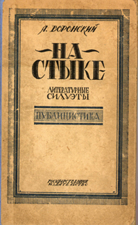 |
Название: На стыке. Литературные силуэты. Публицистика.
Издательство: Госиздат. Год: 1923. Тираж: 7000. Страницы: 352. |
Оглавление:
5. Литературные отклики. 37. Из современных литературных настроений . 49. Литературные Силуэты: Евгений Замятин; 79. Всеволод Иванов; 111. Борис Пильняк. 139. В тисках. 151. Страда. 177. По поводу одног о спора. 199. На новом пути. 215. Г. Уэльс о Советской России. 229. Об отшельниках, безумцах и бунтарях. 239. Из одного двевника. 249. Стихийный большевизм. 265. Песни северного рабочего края. 277. Г. В. Плеханов. 287. Литературная хроника. 297. Советская Россия в осв ещении белого обозревателя. 313. Старческое слабоумие. 321. Похмелье. 331. От народнического утопизма к контр-революционной кулацкой и деологии. 339. Социал-демократическое мещанство. 347. Распад идеологии. |

|
Название: Искусство и жизнь.
Издательство: Круг. Год: 1924. Тираж: 3000. Страницы: 327. |
I. Искусство и жизнь 7. Искусство, как познание жизни и современность (К вопросу о наших разногласиях). 58. О хлесткой фразе и классиках (К вопросу о наших литературных разногласиях). 72. На перевале (Дела литературные). 87. О пролетарском искусстве и художественной политике нашей партии. 114. На попятный двор («На посту» No. 2-3). 122. О группе писателей «Кузница» (Общая характерискика). 176. Об альманахах «Круг». 194. О вечных боях. 202. О писателе и читателе. 206. На одре страданий. 213. Цивилизаторы. II. Из современных настроений. 219. По поводу одной встречи. 226. На платформе затяжного характера советской власти. III. Белая пресса. 265. Обреченные. 237. Милюков и русская революция. 248. Почему они погибли. 258. Православие и эсеры. IV. Политические силуэты. 265. Россия, человечество, человек и Ленин. 275. Ленин. 295. Товарищ Фрунзе. 302. Петлюра. 306. Борис Савинков. V. Арабески. 311. Новые скрижали. 315. Коммунизм, как идеал рабочего класса. 319. Чеоловечское слишком человеческое. 322. Дым отечество. 325. Вещи и люди. |

|
Название: Искусство, как познание жизни и современность
Издательство: Иваново-Вознесенск: Основа Год: 1924. Тираж: Страницы: 64. |
|
| 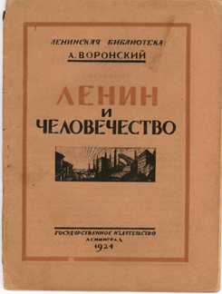 |
Название: Ленин и человечество.
Издательство: Ленинград: Государственное издательство. Год: 1924. Тираж: 50,000. Страницы: 64. |
Содержание:
3. Ленин. 35. Россия, человечество, человек и Ленин. 50. У склепа. |
| 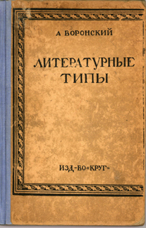 |
Название: Литературные типы.
Издательство: Круг Год: 1925. Тираж: 3000. Страницы: 244 |
Содержание:
Литературные типы: 5. Маяковский. 39. Сергей Есенин. 67. Демьян Бедный. 99. И. Бабель. 119. Л. Сейфуллина. 131. Леонид Леонов. 150. О группе писателей «Молодая Гвардия» и «Октябрь». 177. О «Перевале» и перевальцах. Статьи: 183. На разные темы. 199. Литратурные заметки. 208. Полемические за метки. 223. Литература и политика. 235. О «текущем моменте» и задачах РКП в художественной литературе. |
| 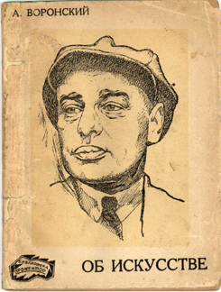 |
Название: Об искусстве.
Издательство: Правда. Серия: Библиотека «Прожектор»; No. 8. Год: 1925. Тираж: 16000. Страницы: 62. |
Содержание:
5. Об искусстве. 34. «История мидян темна и непонятна». 44. О мудрой точке. 50. Литературные заметки. (Обложка сделана художником Дени) |
| 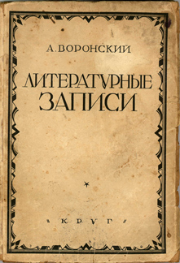 |
Название: Литературные записи.
Издательство: Круг. Год: 1926. Тираж: 4000. Страницы: 167. |
Содержание:
I. 7. Фрейдизм и искусство. 35. Об искусстве. 57. О том, чег о у нас нет. 73. Кнут Гамсун. 90. Пролазы и подхалимы. 96. Докука писательского быта. 101. Художественная литература и рабкоры. 110. О критике и библиографии. 113. Вне жизни и вне времени. 124. Советская литература и белая эмиграция. II. 135. Об отошедшем. 146. Памяти Есенина. 156. Михаил Васи льевич Фрунзе. 159. Лариса Михайловна Рейснер. 161. В. Г. Короленко. |
| 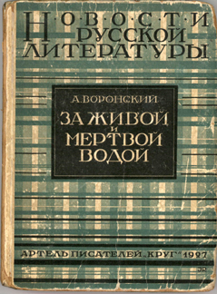 |
Название: За живой и мертвой водой. Второе издание.
Издательство: Круг Год: 1927. Тираж: 6000. Страницы: 256. |
|

|
Название: Литературные типы. Издание второе дополненное
Издательство: Круг. Год: 1927. Тираж: 4000. Страницы: 268. |
Содержание:
7. Предисловие. I. 15. Евгений Замятин. 39. Борис Пильняк. 61. И. Бабель. 81. Всеволод Иванов. 108. Леонид Леонов. 127. Лидия Сейфуллина. 139. О группе писателей «Октябрь» и «Молодая Гвардия». 177. О «Перевале» и перевал ьцах. II. 173. Сергеи Есенин. 201. Маяковский. 236. Демьян Бедный. |
| 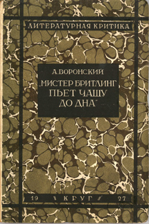 |
Название: Мистер Бритлинг пьет чашу до дна. Сборник статей и фельетонов.
Издательство: Круг. Год: 1927. Тираж: 4000. Страницы: 231. |
Содержание:
Фельетоны: 7. Мистер Бритлинг пьет чашу до дна. 20. Об ужасн ой крокодиле, о федерации писателей и фальшивых фразах. 38. «В общем и целом». 52. Один оглушительный апплодисмент. Критические статьи: 65. О Горьком. 87. Журавли над Гнилопята ми. 110. Лунные туманы (О Сергее Клычкове). 125. Писатель, книга, читатель. 145. О федерации советских писателей. 157. О книге Всеволо да Иванова «Тайное тайных». 161. Старое и новое (об А. Фадееве). 169. На хорошей дороге (о М. Светлове и И. Уткине). 178. Новиков-Приб ой. 184. Версты полосатые. 192. Долой неграмотность. Стенограммы: 199. Из прошлого (речь на юбилейном вечере «Кра сной нови»). 206. Писатель и основные элементы его творчества (из доклада рабкорам «Правды»). 218. Из доклада о «Красной нови». |

|
Название: Искусство видеть мир. Сборник статей.
Издательство: Круг. Год: 1928. Тираж: Страницы: 216. |
Содержание:
5. О художественной правде. 46. Заметки о художественном творчестве. 81. Искусство видеть мир. 115. Мраморный гром. 151. Марсель Пруст. 162. Об идустриализации и об искусстве. 170. Десятилетие Окрября и советская литература. 183. Пути и перепутья. 189. Литературный дневник. 209. Заметка о Короленко. |

|
Название: Литературные портреты. I.
Издательство: Москва: Федерация Год: 1928. Тираж: 4000. Страницы: 458. |
Содержание:
I. 7. Предисловие. 17. Андрей Белый. 64. В. В. Вересаев. 76. Евгений Замятин. 111. В. Г. Короленко. 128. Алексей Толстой. II. 159. И. Бабель. 191. Сергей Есенин. 260. Всеволод Иванов . 302. Сергей Клычков. 322. Леонид Леонов. 351. Маяковский. 401. Борис Пильняк. 446. Лидия Сейфуллина. |
| 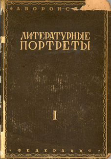 |
Название: Литературные портреты. II.
Издательство: Москва: Федерация Год: 1929. Тираж: 4000 . Страницы: 327. |
Содержание:
III. 7. О Горьком. 38. Демьян Бедный. 79. Н. Огнев. 96. Н. Т ихонов. 141. Прозаики и поэты «Октября» и «Молодой Гвардии»: А. Безыменский, Мих. Голодный, Иван Доронин, Александр Жаров, Нико лай Кузнецов, Мих. Светлов, Ясный. Прозаики и поэты «Кузницы»: В. Александровский, Мих. Герасимов, Василий Казин, Влад. Кирилло в, А. Макаров, С. Обрадович, Ник. Полетаев, Г. Санников, Филипченко, Мих. Волков, Федор Гладков, Н. Ляшко, А. Неверов, Новиков-Прибой, Павел Низовой, П. Яровой. 220. О «Перевале» и перевальцах. 229. А. Аросев. 240. Тарасов-Родионов. 248. Юрий Либединский. 252. А. Малы шкин. 257. Новиков-Прибой. 262. Лариса Михайловна Рейснер. 267. Светлов. Уткин. 277. А. Фадеев. IV. 289. Кнут Гамсун. 314. Марс ель Пруст. |

|
Название: За живой и мертвой водой. Книга II.
Издательство: Федерация. Год: 1929. Тираж: 10000. Страницы: 270. |
|
|
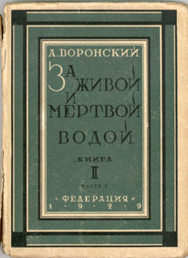
|
Название: За живой и мертвой водой. Книга II. Часть 2.
Издательство: Федерация. Год: 1929. Тираж: 5000 Страницы: 240. |
|

|
Название: Глаз урагана.
Издательство: Москва: Недра. Год: 1931. Тираж: 7000. Страницы: 196. |
|
| 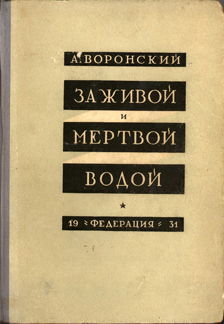 |
Название: За живой и мертвой водой.
Издательство: Федерация. Год: 1931. Тираж: Страницы: |
|

|
Название: Рассказы.
Издательство: Москва: Федерация. Год: 1932. Тираж: 5200. Страницы: 178. |
Содержание:
3. Из старых писем. 20. Бессонная память. 28. Первое произведение. 43. Бомбы. 66. Экспонат. 76. Федя - гверильяс. 114. Броненосец. 129. Тюремные мелочи. 152. Облака. 164. Из рассказов Валентина. |

|
Название: Рассказы и повести.
Издательство: Москва: Советская Литература. Год: 1933. Тираж: 10000. Страницы: 266. |
Содержание:
5. Из старых писем. 17. Бессонная память. 23. Первое произведение. 34. Бомбы. 50. Экспонат. 57. Федя - гверильяс. 83. Броненосец. 94. Тюремные мелочи. 110. Облака. 118. Из рассказов Валентина. 128. Глаз урагана. |

|
Название: За живой и мертвой водой.
Издательство: Московское Товарищество Писателей. Год: 1934. Тираж: 5200 Страницы: 536. |
|
| 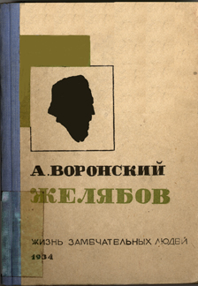 |
Название: Желябов.
Издательство: Москва: Журнально-Газетное Объединение. Год: 1934. Тираж: 30,000. Страницы: 400. |
Nota bene: Эта книга вышла в биографической серии «Жизнь замечательных людей» (№. III-IV) под редакцией М. Горького, Л. Каменева, М. Кольцова и А. Тихонова. |

|
Название: Гоголь.
Издательство: Москва: Журнально-Газетное Объединение. Год: 1934. Тираж: 50,000. Страницы: 415. |
Nota bene: Эта книга вышла в биографической серии «Жизнь замечательных людей» (№. XVII-XVIII), под редакцией М. Горького, Л. Каменева, М. Кольцова и А. Тихонова. Она была опубликована в конце 1934-го года, но большинство экземпляров было уничтожено, вероятно, в связи с арестами по делу об убийстве С. М. Кирова 1 декабря 1934-го года. Л. Б. Каменев, один из редакторов данной серии, был обвинен в ответственности за это убийство. |

|
Название: Waters of Life & Death.
Издательство: George Allen & Unwin Ltd. Год: 1936. Страницы: 344. Переводчик: L. Zarine. |
| Books by Voronsky | Articles by Voronsky | Material about Voronsky | Correspondence |
|---|---|---|---|
|
|